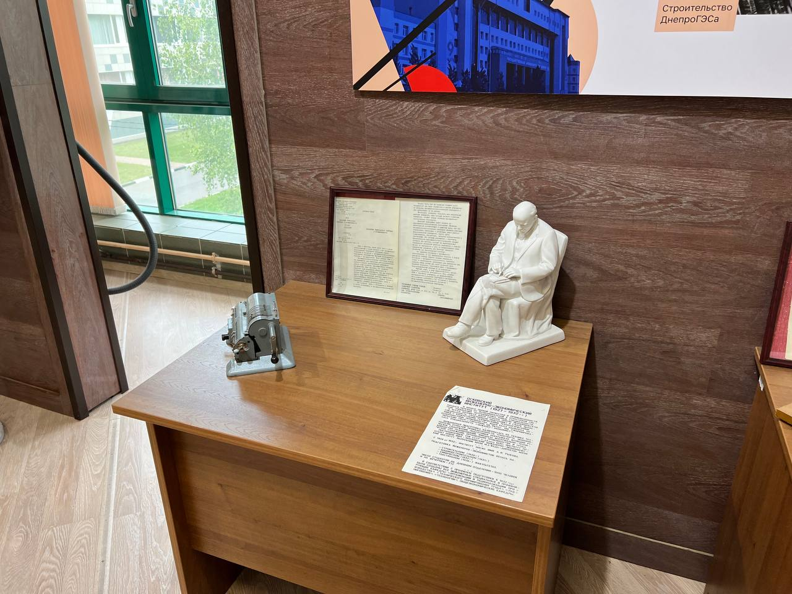
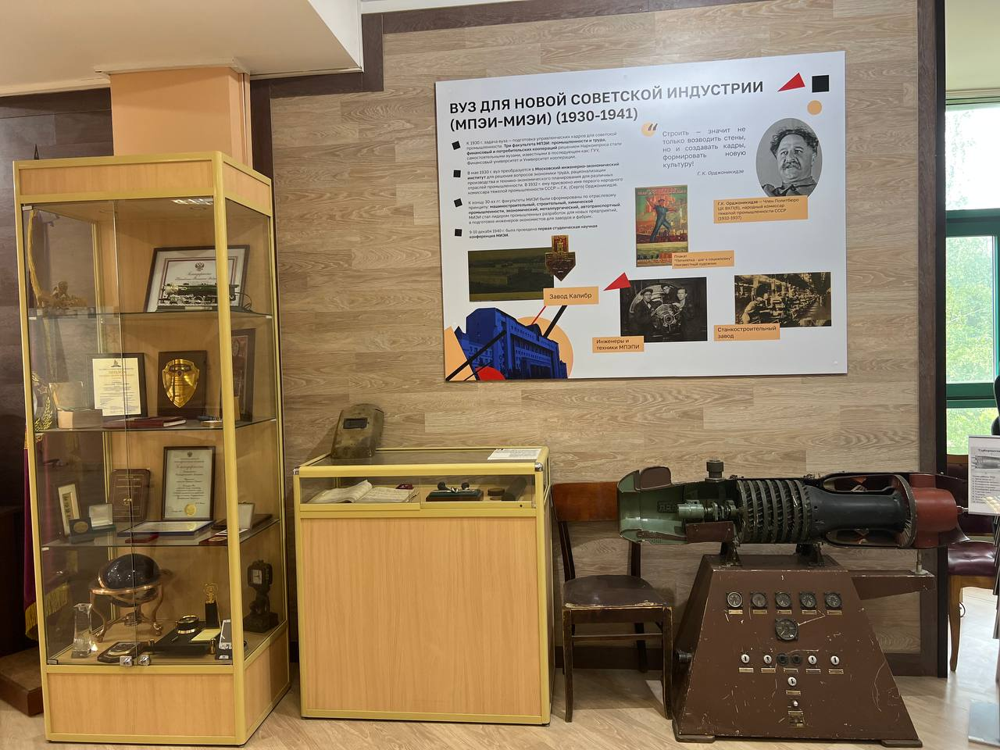
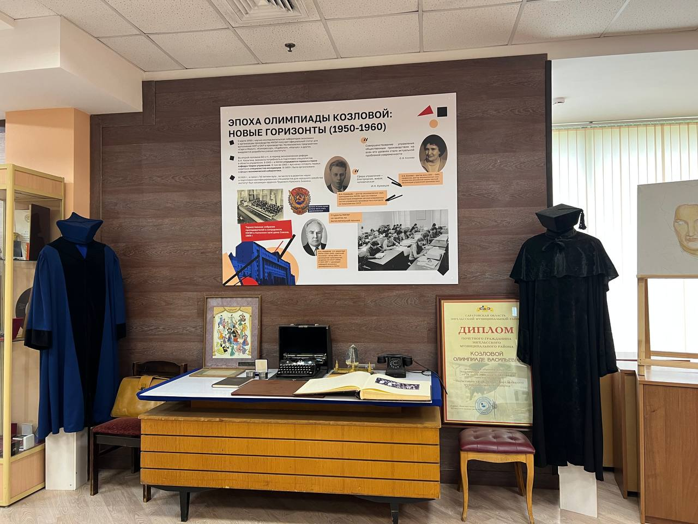
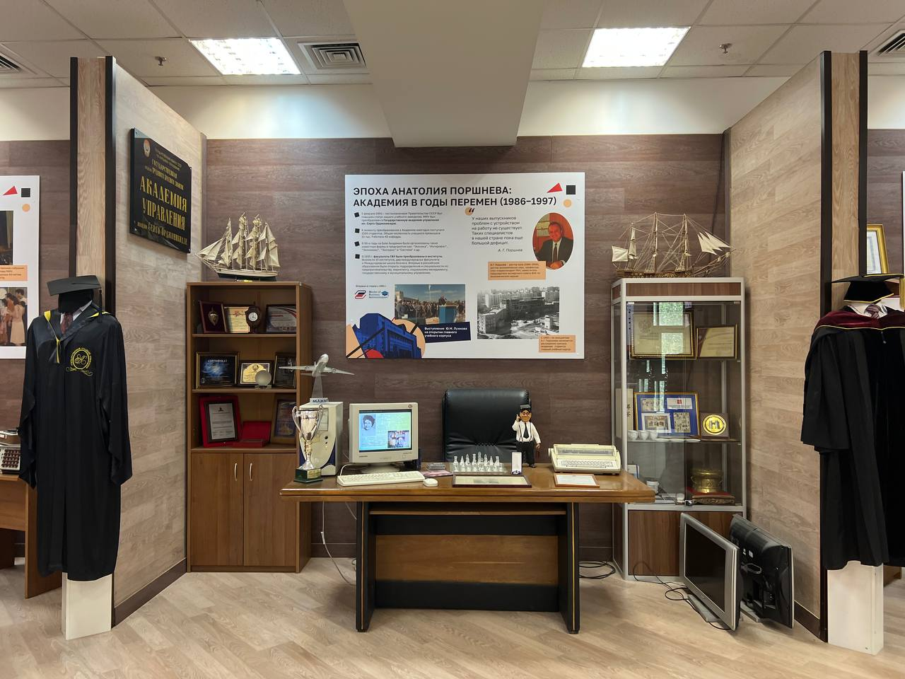
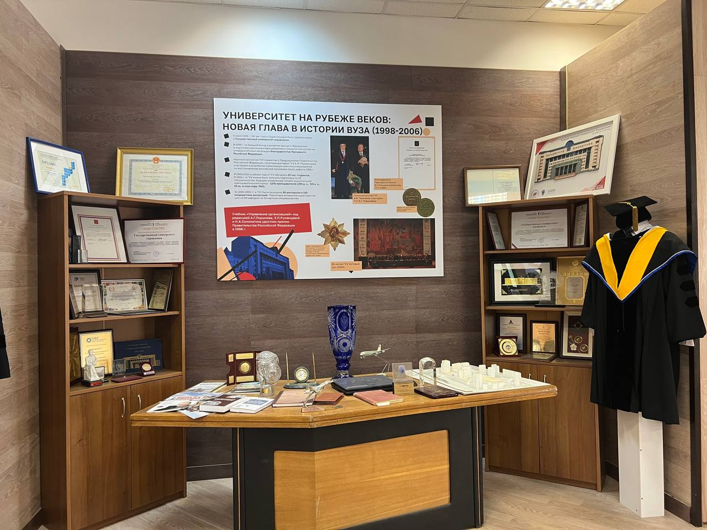

Музей истории и развития управления Государственного университета управления – одно из подразделений Университета, выполняющее учебные, методические и научно-исследовательские функции.
Обеспечивает учебный, научный и воспитательный процесс.
Основанный в 2003 году, музей ГУУ бережно сохраняет богатое наследие одного из старейших управленческих вузов России.
За годы работы сформирована уникальная коллекция, насчитывающая более 500 экспонатов, которые были собраны совместными усилиями педагогов, сотрудников и студентов университета.
В коллекции музея есть: личные вещи рукооводителей, элементы интерьера, рабочие приспособления научной и студенчиской работы, большое количество техники, мантии выпускников, личные вещи ректоров, военные экспонаты, фотографии и различные награды.
Все эти экспонаты отражают уникальную и наполненную событиями историю Государственного Университета Управления.
Экспозиции
Александровское коммерческое училище
Александровское коммерческое училище (1880–1917) является ключевым экспонатом,
иллюстрирующим становление коммерческого и управленческого образования в России.
Его создание стало ответом на острую потребность империи в квалифицированных
кадрах для динамично развивающейся экономики. Училище предлагало новаторскую,
глубоко практико-ориентированную программу, включающую бухгалтерию,
коммерческое право, политэкономию и иностранные языки. Оно стало одним из первых
учреждений, систематически готовящих высококлассных специалистов для бизнеса.
Деятельность училища значительно повысила престиж и уровень коммерческого
образования, заложив фундамент для развития целой системы управленческого и
экономического обучения. После революции училище трансформировалось, пройдя
через ряд переименований и преобразований. В конечном итоге, эти исторические
корни привели к созданию современного Государственного университета управления
(ГУУ). Таким образом, Александровское училище является непосредственной
предшественницей одного из ведущих управленческих вузов России, символизируя
эволюцию отечественной школы менеджмента.
В экспозиции находятся:
-Форма выпускника Александровского коммерческого училища: Фуражка и Шинель
-Счеты из Александровского коммерческого училища
А так же другие экспонаты

Первые шаги вуза (МПЭПИ-МПЭИ) 1919-1930
Экспонат посвящён революционным преобразованиям в системе образования.
После Октябрьской революции 1917 года начали создаваться новые учебные заведения практической направленности — техникумы.
Преемником Александровского коммерческого училища в 1917 году стал Московский промышленно-экономический техникум (МПЭТ).
С 30 апреля 1919 года начинается история университета: на базе МПЭТ учреждается высшее учебное заведение — Московский
промышленно-экономический практический институт (в 1923 году из названия убрали слово «практический»).
Это изменение отражало стремление к более глубокому и системному образованию специалистов в области экономики и промышленности.
Институт стал важным шагом на пути создания новой модели высшего образования, ориентированной на практику и социалистические идеалы.
Данный экспонат демонстрирует материалы того времени, рассказывая об этапах становления учебного заведения.
В экспозиции находятся:
-Машинка пишущая "Ундервуд"
-Подарок от студентов "Узел"
-Пирит золотоносный
-Маска сварочная
А так же другие экспонаты
Суровые годы войны и послевоенное восстановление 1941-1950
Экспонат посвящён Московскому инженерно-экономическому институту в годы Великой Отечественной войны — тяжёлому, но героическому периоду в его истории.
С первых дней войны преподаватели, сотрудники и студенты встали на защиту Родины, многие ушли на фронт, проявляя мужество и самоотверженность.
Экспозиция рассказывает о подвигах выпускников и сотрудников, чьи имена навсегда вошли в историю.
Представлены архивные документы, фотографии, награды. Особое внимание уделено героизму и человеческой стойкости, проявленным в самые тяжёлые годы.
«Вахта памяти»— центральная часть выставки, символизирующая уважение и благодарность новым поколениям к подвигу предшественников.
Несмотря на тяжёлые последствия войны, институт быстро возобновил учебный процесс и научную деятельность, активно участвуя в восстановлении народного хозяйства.
В это время началось расширение образовательных программ, с учётом новых задач, стоящих перед страной.
Одним из ключевых событий стало появление первой управленческой кафедры, что ознаменовало начало подготовки специалистов в области управления производством и экономическими процессами.
Это стало важным шагом к формированию современной системы управленческого образования.
В экспозиции находятся:
-Каска советская образца 1941 г
-Книжка красноармейская на имя Кичакова АС и Назарова АИ
-Форма офицерская образца 1943 г.: Шинель и Папаха
-Газета "ПРАВДА" (1945 г)
А так же другие экспонаты


Эпоха Олимпиады Козловой: Новые горизонты 1950-1960
Эпоха Олимпиады Козловой: Первый Управленческий 1970-1985
Период руководства Олимпиады Васильевны Козловой стал поистине золотой эпохой в истории университета.
Экспонат «Эпоха Олимпиады Васильевны Козловой» посвящён одному из самых ярких и значимых периодов в истории Государственного университета управления — времени, когда университетом руководила Олимпиада Васильевна Козлова. Этот этап охватывает десятилетия интенсивного развития, становления научных школ, укрепления учебно-методической базы и роста авторитета ГУУ как ведущего вуза страны в области экономики и управления.
В экспозиции отражены ключевые события и достижения той эпохи: открытие новых факультетов и кафедр, укрепление связей с промышленностью и государственными структурами, развитие международного сотрудничества.
Отдельное место в экспозиции занимает образ самой Олимпиады Васильевны — выдающегося организатора, учёного, педагога и женщины с твёрдым характером и высокой культурой.
«Эпоха Олимпиады Васильевны Козловой» — это дань памяти и глубокого уважения к человеку, сыгравшему ключевую роль в истории ГУУ.
В экспозиции находятся:
-Мантия Козловой О.В.: Мантия и Шапочка
-Диски с фотографиями (2 шт.) от коллектива ИВЦ Мосэнерго
-Машинка печатная Козловой О.В.
-Письменные принадлежности Козловой ОВ - перо и ручка
А так же другие экспонаты
Эпоха Анатолия Поршнева: академия в годы перемен 1986-1997
Этот раздел экспозиции посвящён переломному периоду в истории Государственного университета управления — времени руководства Анатолия Григорьевича Поршнева (1986–1997).
Эти годы стали испытанием для всей системы высшего образования, но именно тогда ГУУ (тогда — ГАУ) не просто сохранил свои позиции, а совершил качественный рывок вперёд, став флагманом управленческого образования новой России.
В экспозиции находятся:
-Доклад об итогах 2004-2005 учебного года и основных направлениях развития университета в
новом учебном году (2005 г.)
-Телефон в виде поезда. Подарок ГУУ в честь 85-летия
-Письмо Президента РФ к 80-летию ГУУ (1999 г.)
-Распоряжение Президента РФ О поощрении коллектива ГУУ (с печатью канцелярии)
А так же другие экспонаты


Университет на рубеже веков: новая глава в истории вуза 1998-2006
Университет в XXI веке: достижения настоящего
Университет в XXI веке: наше будущее
9 июля 1998 г. ГАУ им. Серго Орджоникидзе была преобразована в Государственный университет управления.
В конце XX — начале XXI века институт прошёл глубокую трансформацию, расширил свои образовательные и научные возможности.
В 1999 г. за большой вклад в развитие высшего образования и подготовку высококвалифицированных специалистов коллектив университета был награжден благодарностью Президента Росийской Федерации.
В 1999/2000 учебном году в ГУУ обучалось 15 тыс. студентов.
В 2004 г. в ГУУ можно было получить подготовку по 22 специальностям.
Будущих управленцев готовил внушительный преподавательский корпус - 1235 преподавателей.
За 2001-2005 гг. в ГУУ были защищены 50 докторских и 120 кандидатских дисертаций.
Подготовка аспирантов и докторантов шла на 60 кафедрах по 24 научным специальностям.
В экспозиции находятся:
-Знак почетный ОПУ МВД
-Сертификат Международного агенства рекордов и достижений на имя ГУУ (2009 г.)
-Диплом победителя в категории "Крупнейшее учреждение" (2011 г.)
-Диплом "Звезда российского менеджмента 21 века" на имя Лялина А.М. (2004 г.)
А так же другие экспонаты
Подарки и сувениры ГУУ
В экспозиции находятся:
Мантия ректора ГУУ: 1. Мантия; 2. Воротничок; 3. Шапка-конфедератка.;
Ваза керамическая гжель "Государственный университет управления";
Медаль металлическая золотого цвета в рамке с надписью "Федеральное агенство по
образованию";
Медаль металлическая памятная с надписью "Saint-Petersburg Academy of Management and
Economics";
Статуэтка с гербом ГУУ подаренная к 90-летию вуза;
Монета металлическая золотого цвета на подставке с гербом ГУУ и надписью "Государственный
университет управления 80 лет";
А так же другие экспонаты...
Основанный в 1919 году как Московский промышленно-экономический институт, ГУУ стал первым в России специализированным вузом по подготовке управленческих кадров. В советский период вуз (тогда МИУ им. Орджоникидзе) под руководством Олимпиады Козловой превратился в ведущий центр управленческого образования, внедрив компьютерные технологии обучения. Переломные 1990-е годы под руководством Анатолия Поршнева ознаменовались преобразованием в Государственную академию управления и созданием первых в России программ МВА. В 2006 году вуз получил статус университета, сохранив лидерские позиции. Сегодня ГУУ - это 10+ факультетов, 15 000 студентов и современные образовательные стандарты. Особую гордость составляют научные школы в области менеджмента и экономики, продолжающие традиции, заложенные десятилетия назад. Университет поддерживает партнерские отношения с ведущими российскими корпорациями и зарубежными вузами. За вековую историю ГУУ подготовил более 200 000 специалистов, многие из которых стали министрами, топ-менеджерами и успешными предпринимателями. Сохраняя богатое наследие, университет продолжает развиваться как центр инноваций в управленческом образовании.
Истоки управленческого образования. XVIII век
Классики экономической науки называли XVIII век «веком торговли». Новый уровень развития производительных сил и производственных отношений потребовал множество подготовленных и обученных специалистов разного характера, включая управленцев. Возникла объективная необходимость в управленческом образовании, сложились необходимые условия для его развития. В течение этого столетия число коммерческих школ в крупных государствах Европы увеличивается. Но эти школы отличались узкой направленностью на подготовку низшего торгового персонала, знакомого, лишь с бухгалтерией, счетоводством, ведением коммерческой переписки и т.п. О подготовке универсального специалиста на широкой общеобразовательной базе речи не велось. В эпоху просвещенного абсолютизма Екатерины II Великой были сделаны значительные шаги в развитии промышленности и коммерции.
В 1772 г., у нас трудами выдающегося екатерининского государственного деятеля И.И. Бецкого и представителя известнейшей династии промышленников П.А. Демидова появляется Коммерческое училище, которое располагалось в здании Воспитательного дома для бесприютных детей. Автором идеи профессиональной коммерческой школы был В.В. Крестинин, русский общественный деятель, историк, краевед, член-корреспондент Петербургской Академии наук. Именно на его разработки опирался И.И. Бецкой при составлении своего проекта. Училище готовило, говоря нынешним языком, «цивилизованных коммерсантов», т.е. специалистов для торговой и промышленной деятельности.
И мы с гордостью отмечаем, что Россия стала одним из основателей этой образовательной отрасли.
Александровское коммерческое училище. 1885–1919 гг.
Историческим предшественником ГУУ стало Московское Александровское коммерческое училище, основанное 19 февраля 1880 г. по инициативе предпринимателя и банкира Н.А. Найденова.
Первым директором был назначен член-корреспондент Петербургской Академии наук, профессор А.В. Летников, выдающийся математик и специалист в области профессионального образования. Летников сказал: «У нас в России первые коммерческие училища возникли уже давно… Мало-помалу для них выработалась опытом особая форма, не имеющая себе подобной на Западе, но вполне соответствующая общим началам организации специальных училищ. Таким образом, в деле устройства коммерческого образования нам нет надобности жить чужим опытом, может быть вовсе для нас непригодным».
Училище стало одним из передовых учебных заведений. Оно обеспечивало глубокое и универсальное образование, располагая современными химическими и физическими кабинетами, товароведческой лабораторией, учебной конторой и библиотекой.
Все учебные программы были утверждены Министерством финансов 11 июля 1885 г., а форму для воспитанников лично утвердил император Александр III.
Выпускники училища становились не только успешными предпринимателями, но и занимали ключевые управленческие позиции: руководили фабриками, банками, фирмами, работали в государственных органах и преподавали.
Рождение вуза. 1918–1957 гг.
После Октябрьской революции 1917 г. коммерческие учебные заведения были преобразованы в новые учреждения, часто называвшиеся «промышленно-экономическими практическими». Их задачей стала подготовка «организаторов социалистического производства».
Одним из первых стал Московский промышленно-экономический техникум (МПЭТ), созданный в 1918 г. Его первым директором был П.И. Шелков (1918–1924), а научным руководителем – С.П. Виноградов (1919–1923). Уже в апреле 1919 г. техникум был преобразован в Московский промышленно-экономический практический институт (МПЭПИ) – предшественник Государственного университета управления.
Институт участвовал в ключевых проектах индустриализации, таких как план ГОЭЛРО и строительство ДнепроГЭСа под руководством Г.М. Кржижановского. В 1923 г. из его названия было исключено слово «практический», и он стал Московским промышленно-экономическим институтом (МПЭИ).
МИЭИ до Великой Отечественной войны
В мае 1930 года из состава МПЭИ были выделены ряд факультетов, которые впоследствии стали самостоятельными вузами.
На базе МПЭИ произошло выделение трёх независимых вузов: Института промышленности и труда, Финансово-экономического института (ныне Финансовый университет) и Института потребительской кооперации.
Сам МПЭИ был передан ВСНХ и преобразован в Московский инженерно-экономический институт (МИЭИ), а в 1932 г. получил имя Серго Орджоникидзе. Целью института стала подготовка инженеров-экономистов для всех отраслей народного хозяйства.
Реформа 1932 г. изменила подход к образованию: вместо функционального был введён отраслевой принцип. В МИЭИ были созданы машиностроительный, строительный и химический факультеты, каждый с двумя специальностями - планирование производства и техническое нормирование. Новый специалист должен был сочетать знания в управлении, финансах, технологии и организации труда. Также был организован факультет промышленного снабжения (прообраз современной логистики).
Институт вёл серьёзную научную работу, а в декабре 1940 г. провёл первую студенческую научную конференцию по вопросам экономики и планирования промышленности.
МИЭИ в годы Великой Отечественной войны (боевые действия)
Великая Отечественная война стала особым и трагическим периодом в истории страны и нашего вуза. Уже в первые недели войны многие студенты и преподаватели МИЭИ были мобилизованы. 10 октября 1941 года состоялся массовый митинг, после которого около 50 сотрудников и студентов добровольно вступили в народное ополчение.
Добровольцы МИЭИ вошли в состав 7-й дивизии народного ополчения и 3-й Московской коммунистической дивизии. Части 3-й дивизии, включая разведку под командованием будущего профессора Е.Ф. Бусалова, обороняли Москву на Ленинградском шоссе. 7-я дивизия приняла тяжелый бой под Вязьмой. Впоследствии 3-я дивизия стала 130-й стрелковой, а её полк, где сражались миэишники, - 371-м гвардейским.
Среди добровольцев были многие деканы, заведующие кафедрами, преподаватели и студенты. В ноябре 1942 года ушел на фронт, и директор института А.Л. Банквицер. Он занимал различные командные должности на 1-м Белорусском фронте.
После войны на работу в вуз вернулись преподаватели и сотрудники, составившие костяк послевоенного коллектива вуза. Это - Г.А.Брянский, И.Г.Галкин, В.Ф.Гировский, В.Г.Давидович, Б.И.Ионас, А.П.Леошкин, Н.Н.Громов, Г.В.Лагунов, М.А.Лебедев, Н.А.Саломатин, П.А.Стёпин и др. Трое из них – Герои Советского Союза - М.Г.Гуреев, А.Д.Давыдов, П.И.Седельников.
За годы войны молодые люди истосковались по учебе и учились с удовольствием, с рвением. Многие студенты той поры впоследствии стали преподавателями, защитили кандидатские и докторские диссертации.
Война унесла жизни многих наших товарищей - преподавателей, сотрудников и студентов МИЭИ.
Вечная им память!
МИЭИ в годы Великой Отечественной войны (наука)
В годы войны МИЭИ решал задачи повышения квалификации для оборонных отраслей. В 1942 г. по просьбе Наркомата авиапрома были организованы трёхмесячные курсы для нормировщиков авиазаводов. Этот опыт привёл к открытию в 1943 г. специальности «инженер-экономист авиационной промышленности» с созданием профильных кафедр.
Также институт по приказу ВКВШ от 2 марта 1943 г. начал подготовку специалистов «Финансирование капитального строительства» для Промбанка, набрав 67 человек (в основном женщин) для работ по восстановлению народного хозяйства. В том же году была переориентирована военная подготовка студентов автотранспортного факультета по запросу Главного автомобильного управления Красной Армии.
В 1944 г. открылся Энергетический факультет, связанный с именем академика Г.М. Кржижановского, одного из авторов плана ГОЭЛРО.
Окончание войны МИЭИ встретил в успешном рабочем состоянии. После войны изменился состав студентов. В стены вуза пришли бывшие фронтовики, одетые в армейские гимнастёрки, с орденами и медалями, многие после ранений. У студентов той поры была огромная жажда знаний, несмотря на трудные условия жизни и учёбы.
МИЭИ после войны. 1950–1970-е годы
17 апреля 1950 г. ректором МИЭИ была назначена О.В. Козлова, возглавлявшая вуз 35 лет. Имея большой производственный, научный и партийный опыт, она вывела институт в число ведущих в стране.
По её инициативе в 1958 г. была создана научно-исследовательская лаборатория экономики и организации производства, а в 1960 г. - мощный научно-вычислительный центр. Сотрудники института разрабатывали и внедряли первые комплексные автоматизированные системы управления (АСУ) на крупнейших предприятиях, таких как «Калибр», «Фрезер» и «Уралвагонзавод», закладывая основы цифровизации экономики.
В период реформ А.Н. Косыгина в 1966 г. в МИЭИ была открыта первая в СССР кафедра теории управления и начата подготовка менеджеров. Под руководством профессора И.Н. Кузнецова была создана первая учебная программа по управлению, а в 1969 г. издан первый советский учебник «Научные основы управления производством».
Институт стал пионером в использовании ЭВМ и АСУ в управлении производством и собственной деятельностью. В 1970 г. за вклад в науку и подготовку кадров МИЭИ был награждён орденом Трудового Красного Знамени.
Московский институт управления (МИУ)
С 1974 г. институт начал подготовку по новой специальности «Организация управления производством», что ознаменовало поворот в подготовке управленцев. Переход к отраслевому принципу обучения был вызван необходимостью дать руководителям не только экономические, но и специальные знания в области информатики, прикладной математики и работы с ЭВМ.
Возникли сомнения в возможности готовить управленцев из вчерашних школьников, что даже обсуждалось в газете «Правда» в 1977 г. В ответ МИУ установил тесные связи со школами Москвы, создав подготовительные курсы и «Школу управления производством» с лекциями по экономике, организации управления и занятиями на ЭВМ.
Институт укреплял связь с предприятиями, где предстояло работать выпускникам. В 1989 г. был создан филиал кафедры в Мосгорплане, где занятия вели сотрудники Моссовета. Появилась специализация повышенного уровня, позволявшая студентам адаптироваться к будущему месту работы. Активно внедрялись деловые игры, имитирующие производственные и кризисные ситуации; к первой половине 1980-х гг. центр деловых игр МИУ сотрудничал с более чем 200 организациями. В 1978 г. на тему использования ЭВМ в обучении был снят фильм «Баламут».
При кафедрах создавались методические кабинеты с имитационными стендами, макетами цехов и тренажерами. Особое внимание уделялось изучению иностранных языков в лингафонных кабинетах и международным программам.
Институт заботился о социализации студентов: общежития проектировались по квартирному типу, развивалась кружковая деятельность, работали строительные отряды. На территории кампуса проводились военные учения с мини-полигонами для изучения артиллерии. С 1985 г. в общежитиях появились персональные компьютеры «Электроника» БК 0010-01 для выполнения заданий. С 1974 г.
Государственная академия управления (ГАУ)
В связи с ростом авторитета и масштабов института, в 1991 году он был преобразован в Государственную академию управления (ГАУ) им. Серго Орджоникидзе. Несмотря на сложности после распада СССР, вузу удалось сохранить кадры и продолжить подготовку управленцев на высоком уровне.
Для адаптации к новой экономической реальности при Академии были созданы коммерческие структуры: студенческая фирма «Эконика» (ныне сеть обувных магазинов), малые предприятия «Интерофис», «Экономикс» и совместные предприятия «Новинтекс», «Саман», занимавшиеся консалтингом и разработкой обучающих программ. С декабря 1991 года началась подготовка биржевых брокеров и специалистов по прикладному менеджменту.
В 1990-е годы ГАУ первой в России открыла подготовку по маркетингу, социальному менеджменту и государственному управлению. В 1990 году была создана кафедра предпринимательства с участием академиков Д.С. Львова, А.М. Румянцева и члена-корреспондента РАН П.Г. Бунича.
С 1993 года по инициативе ректора А.Г. Поршнева началось расширение кампуса: строительство главного учебного корпуса и реконструкция лабораторного корпуса и спорткомплекса.
Научная деятельность оставалась активной: с 1994 по 1997 год было опубликовано 54 монографии и 40 учебников, включая отмеченный премией Правительства РФ учебник «Управление организацией» под редакцией Поршнева, Румянцевой и Саломатина. Учёные ГАУ участвовали в разработке мер по преодолению последствий дефолта 1998 года совместно с премьер-министром Е.М. Примаковым, а в 1999 году коллектив вуза был удостоен благодарности Президента РФ.
Государственный университет управления (ГУУ)
Признанный авторитет, традиции и масштабы деятельности Государственной академии управления (ГАУ) им. Серго Орджоникидзе привели к повышению её статуса. Приказом Министерства образования РФ от 9 июля 1998 г. академия была преобразована в Государственный университет управления (ГУУ).
К своему 85-летию в 2004 году ГУУ, по словам ректора, члена-корреспондента РАН А.Г. Поршнева, стал крупнейшим вузом России, специализирующимся на подготовке управленцев. Университет был отмечен благодарностью Президента РФ, награжден Орденом Петра Великого и вошел в топ-10 лучших вузов страны.
ГУУ являлся методологическим центром управленческого образования. Его Учебно-методическое объединение объединяло более 400 вузов. Университет издал фундаментальные работы, ставшие базовыми для всех российских вузов: «Экономика развития» Д.С. Львова, «Теория организации» Б.З. Мильнера, «Финансы фирмы» под ред. А.М. Ковалевой и другие. За создание учебника «Система муниципального управления» под редакцией В.Б. Зотова коллективу авторов была присуждена премия Правительства РФ.
Был заключен уникальный договор с РАН, что привело к созданию Института национальной и мировой экономики под руководством академика Д.С. Львова. Университет установил прочные связи с государственными органами и крупнейшими компаниями, такими как «Газпром» и «Сбербанк».
ГУУ активно развивал международное сотрудничество, являясь членом престижных ассоциаций: Европейского фонда развития менеджмента (EFMD), Международной ассоциации университетов (IAU) и других, и реализуя программы двойных дипломов. На текущий момент ГУУ активно сотрудничает с 35 университетами-партнерами, из 19 Стран (Германии, Франции, Испании, Италии, Польши, Нидерландов, Португалии, Словении, Финляндии, Китая, Тайваня, Японии, Кореи).
Научная деятельность фокусируется на стратегических направлениях: цифровые технологии, искусственный интеллект, Big Data, FinTech. В университете действует кафедра ЮНЕСКО и проводится ряд известных научных форумов. Ежегодно в ГУУ проводятся «Неделя науки», конференции «Актуальные проблемы управления», «Львовские чтения», международный научный форум «Шаг в будущее», а также различные конкурсы, олимпиады и выставки.
Воспитательной работе способствует Центр учебно-воспитательных программ (ЦУВП), организующий множество студенческих мероприятий, клубов и творческих объединений.
В ЦУВП работают:
• Творческий коллектив «СтуДос»;
• Лига КВН ГУУ;
• Музыкальный клуб «Инструментал»;
• Фотоклуб «Объектив»;
• Студенческий театр;
• Творческое объединение «Изостудия»;
• Московский ансамбль армянского народного танца «Nur Dance»;
• Танцевальная студия «Los Angeles Style»;
• Клуб Интернациональной Дружбы;
• Социальный студенческий отряд «ЛУЧик»;
• ЭкоКлуб ГУУ им. В.И.Вернадского;
• Клуб Дебатов;
• Кейс-клуб GARNET;
• Клуб «Русская и мировая культура»;
• Школа этикета;
• Клуб «Карьерист»;
• Студенческий парламентский клу;
• Историко-патриотическое движение «Звезда»
Материальная база ГУУ включает пять учебных корпусов, спортивный комплекс, бассейн, общежития и современную инфраструктуру в ЮВАО Москвы, обеспечивая все условия для подготовки высококлассных специалистов.